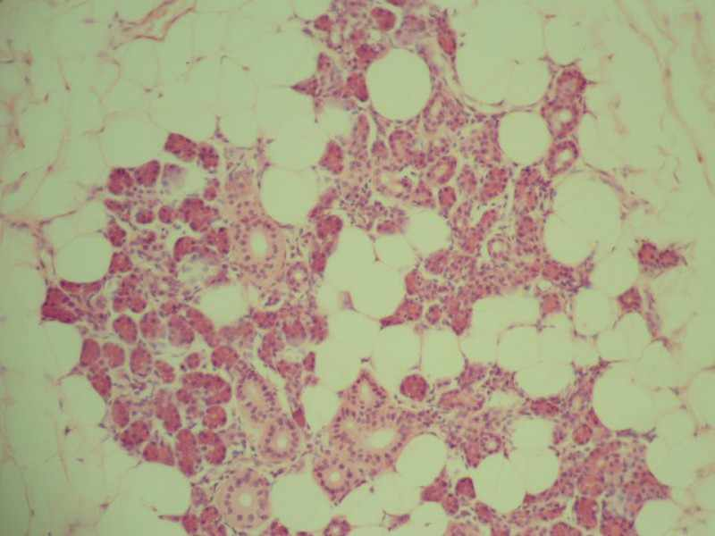

-

Parotid Gland
A salivary gland in humans. It is one of a
pair, and the largest of the salivary glands. -

Submandibular Glands
A salivary glands located beneath the floor
of the mouth.. In humans, they account for 70%
of the salivary volume and weigh about 15 grams. -

Sublingual Glands
Salivary glands in the mouth. They lie anterior
to the submandibular gland under the tongue,
beneath the mucous membrane of the floor of the mouth.
Back